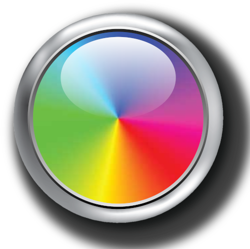
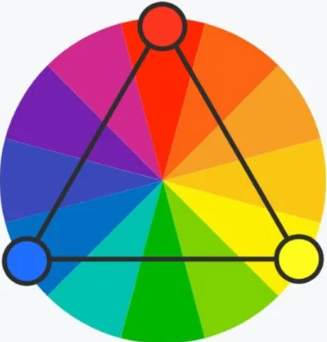
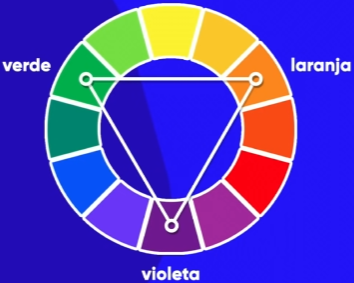
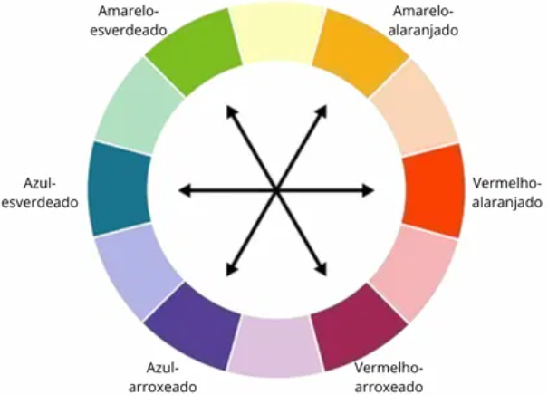
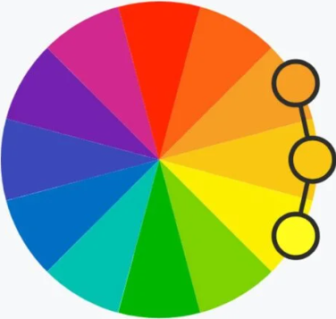
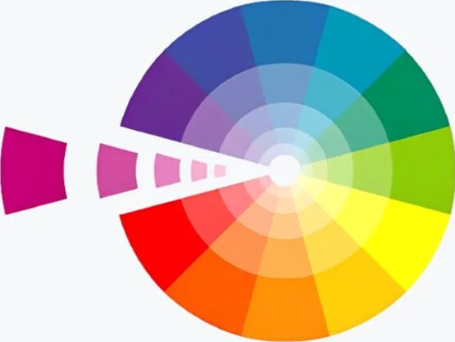

📘 Aula 3 MD-2: Harmonia de cores 📘
Círculo Cromático
O círculo cromático é uma representação visual das cores, organizadas de forma a mostrar as relações entre elas.
"Clique Na Imagem Para Ampliar"
Cores Principais
O círculo cromático é composto por 12 cores principais: três cores primárias
(vermelho, azul e amarelo), três cores secundárias (laranja, verde e roxo) e seis cores terciárias.
"Clique Na Imagem Para Ampliar"
Cromático Triádico
O círculo cromático triádico são cores primárias A combinação das cores tríades consiste em unir três ou mais tons com a mesma distância entre si no círculo, como azul-arroxeado + vermelho-alaranjado + amarelo-esverdeado, por exemplo.
"Clique Na Imagem Para Ampliar"
Essa é uma versão mais abrangente da harmonia entre cores complementares e possibilita inúmeros visuais que unem contrastes e semelhanças entre os tons escolhidos.
Cores Secundárias
As cores secundárias são obtidas pela mistura de duas cores primárias em partes iguais. As cores secundárias são: verde (mistura de azul e amarelo), laranja (mistura de vermelho e amarelo) e roxo (mistura de vermelho e azul).
"Clique Na Imagem Para Ampliar"
Entender as cores secundárias é essencial para artistas, designers gráficos e profissionais de design de interiores, pois permite a criação de combinações de cores que são visualmente agradáveis e eficazes em transmitir emoções e mensagens. Além disso, as cores secundárias podem ser usadas para criar cores terciárias, que são formadas pela mistura de uma cor primária com uma cor secundária adjacente.
Cores Terciárias
As cores terciárias são obtidas pela mistura de uma cor primária com uma cor secundária adjacente no círculo cromático. As cores terciárias são: vermelho-alaranjado (mistura de vermelho e laranja), amarelo-alaranjado (mistura de amarelo e laranja), amarelo-esverdeado (mistura de amarelo e verde), azul-esverdeado (mistura de azul e verde), azul-arroxeado (mistura de azul e roxo) e vermelho-arroxeado (mistura de vermelho e roxo).
"Clique Na Imagem Para Ampliar"
As cores terciárias são importantes para a criação de paletas de cores mais complexas e sofisticadas, permitindo uma maior variedade de combinações e nuances. Elas são amplamente utilizadas em design gráfico, moda, decoração de interiores e arte para criar efeitos visuais interessantes e transmitir diferentes emoções. Além disso, o conhecimento das cores terciárias é essencial para entender a teoria das cores e como as cores interagem entre
Temperatura De Cores
No que diz respeito a temperatura, as cores do disco cromático são divididas em dois grupos: as cores quentes e as cores frias.
Por isso, ao combinar cores com o círculo cromático, é importante ter em mente que cada grupo de cores pode transmitir uma sensação diferente para quem olha para elas.
"Clique Na Imagem Para Ampliar"
As cores frias, por exemplo, costumam ser mais discretas e transmitir seriedade, sobriedade e exatidão. Além disso, essas cores têm uma tendência de contrair ou diminuir as superfícies que colorem.
Por outro lado, as cores quentes costumam transmitir ímpeto, entusiasmo e ação. No geral, elas costumam causar o efeito de dilatação nas superfícies que colorem e, portanto, devem ser usadas em áreas que queremos chamar a atenção.
Cores Complementares
As cores complementares são as que se contrastam, pois não apresentam vestígios de pigmentos em comum entre ambas.
Para identificar uma cor complementar, basta examinar o círculo cromático – onde estão dispostas as cores primárias, secundárias e terciárias – e achar as cores que estão de lados opostos no círculo.
"Clique Na Imagem Para Ampliar"
A mistura de cores complementares pode gerar cores neutras, que variam entre tonalidades de cinza, do marrom e do bege, por exemplo.
Cores Análogas
As cores análogas são aquelas que estão localizadas próximas umas das outras no círculo cromático. Essas cores compartilham uma cor primária em comum, o que cria uma harmonia visual quando usadas juntas.
"Clique Na Imagem Para Ampliar"
As cores análogas são frequentemente usadas em design de interiores, moda e arte para criar paletas de cores harmoniosas e agradáveis aos olhos. Elas podem ser usadas para transmitir diferentes emoções e atmosferas, dependendo das cores escolhidas. Por exemplo, uma paleta de cores análogas composta por tons de azul e verde pode criar uma sensação de calma e serenidade, enquanto uma paleta composta por tons de vermelho e laranja pode transmitir energia e entusiasmo.
Cores Monocromáticas
As cores monocromáticas são variações de uma única cor, que podem ser obtidas através da adição de branco, preto ou cinza à cor base. Essas variações incluem tons (adição de preto), matizes (adição de branco) e sombras (adição de cinza).
"Clique Na Imagem Para Ampliar"
As cores monocromáticas são frequentemente usadas em design de interiores, moda e arte para criar paletas de cores elegantes e sofisticadas. Elas podem ser usadas para transmitir diferentes emoções e atmosferas, dependendo da cor base escolhida. Por exemplo, uma paleta de cores monocromáticas composta por tons de azul pode criar uma sensação de calma e serenidade, enquanto uma paleta composta por tons de vermelho pode transmitir energia e paixão.
🎨 Exemplos Práticos de Combinações de Cores
Abaixo você pode visualizar algumas combinações de cores diretamente, usando pequenas bolinhas representando cada cor. Observe como cores complementares, análogas e tríades funcionam na prática:
1. Cores Complementares
Vermelho + Verde → Alto contraste e equilíbrio visual.
2. Cores Análogas
Laranja → Laranja Claro → Amarelo → Harmonia suave e agradável.
3. Cores Triádicas
Azul + Vermelho + Amarelo → Contraste dinâmico e equilíbrio visual.
4. Cores Frias e Quentes
Fria → transmite calma | Quente → transmite energia e destaque.